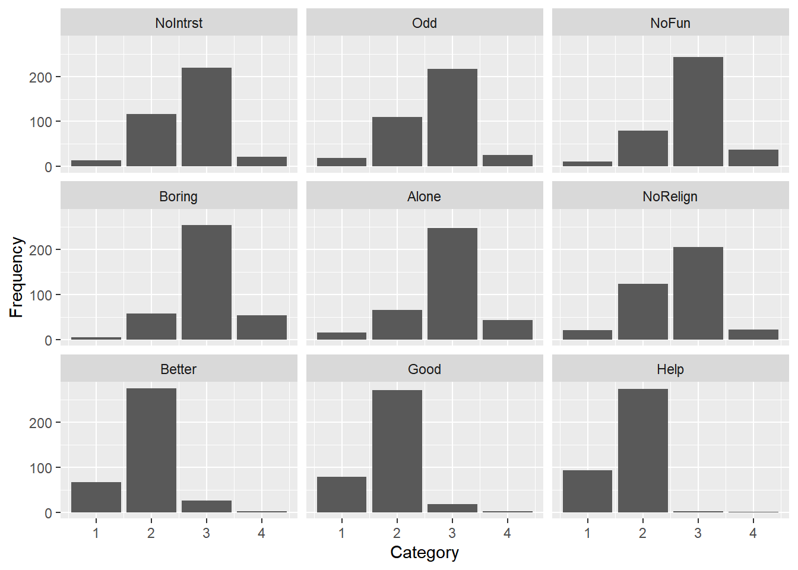
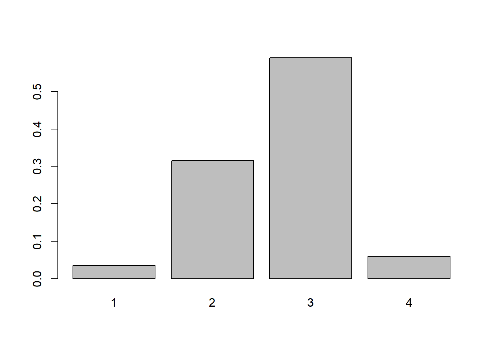
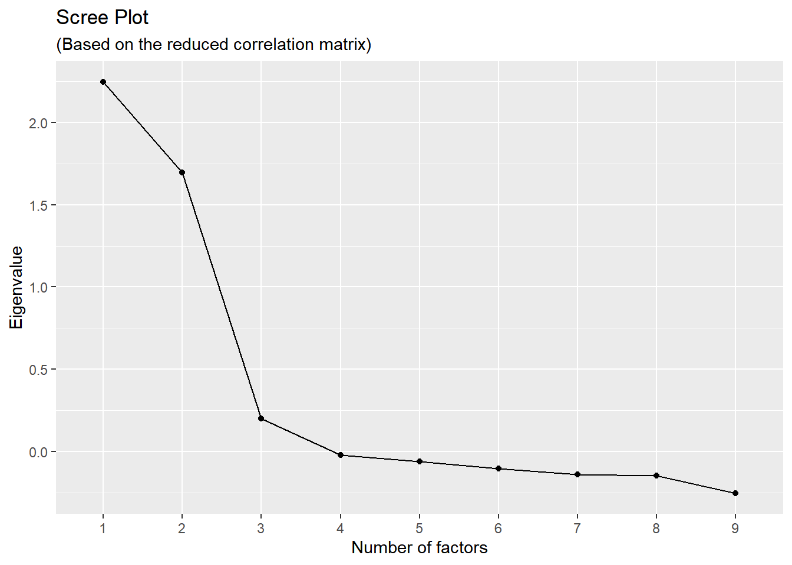
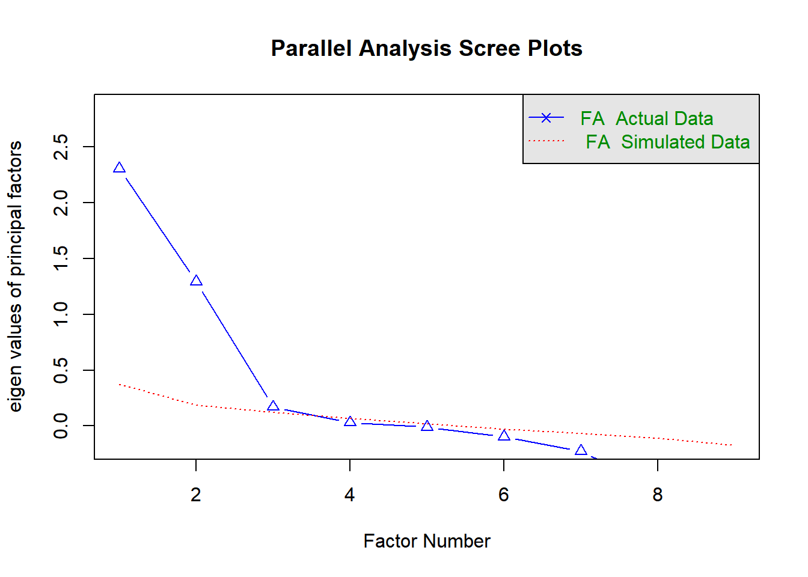
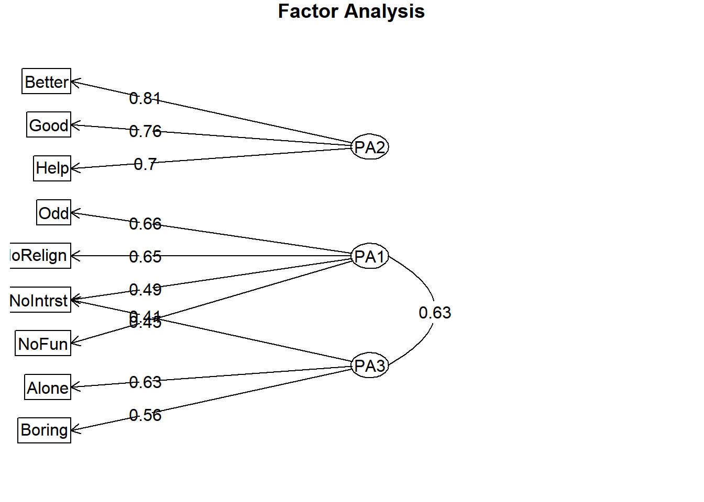

9 Week 08: Exploratory Factor Analysis, Part 2
Conducing EFA with correlations and categorical data, and saving factor scores
9.1 Factor analysis with correlation data
Sometimes we only have access to correlation or covariance data. We can perform factor analysis on correlation matrices using nearly the same set of operations.51
9.1.1 Setting up the data
If we had a full (symmetrical) matrix in a CSV file, we can import these into R. However, it will not be in a matrix format but as a data frame, so we need to use the as.matrix() function and provide names for the columns and rows.
R_df <- read.csv("Week08_GSS_ScienceCorrs.csv")
R <- as.matrix(R_df)
rownames(R) <- colnames(R) <- names(R_df)
names(R_df)## [1] "NoIntrst" "Odd" "NoFun" "Boring" "Alone" "NoRelign" "Better" "Good" "Help"## NoIntrst Odd NoFun Boring Alone NoRelign Better Good Help
## NoIntrst 1.000 0.504 0.454 0.286 0.351 0.292 0.123 0.049 0.006
## Odd 0.504 1.000 0.388 0.303 0.216 0.311 0.138 0.029 0.027
## NoFun 0.454 0.388 1.000 0.261 0.260 0.264 0.113 0.046 0.007
## Boring 0.286 0.303 0.261 1.000 0.252 0.090 -0.136 -0.131 -0.231
## Alone 0.351 0.216 0.260 0.252 1.000 0.096 0.076 0.031 -0.010
## NoRelign 0.292 0.311 0.264 0.090 0.096 1.000 0.067 0.051 0.046
## Better 0.123 0.138 0.113 -0.136 0.076 0.067 1.000 0.470 0.425
## Good 0.049 0.029 0.046 -0.131 0.031 0.051 0.470 1.000 0.402
## Help 0.006 0.027 0.007 -0.231 -0.010 0.046 0.425 0.402 1.000Now we have a matrix, called R, which we can use in our factor analysis functions.
One more step is that we need to specify the n-size, if we have access to that information. Let’s say we knew it was 372.
9.1.1.1 Some extra stuff: Importing half the correlation matrix
Alternatively, let’s say we were given a file that included only one side of the correlation matrix. Or, we got lazy and instead of manually entering all of the correlations on both sides, we only want to manually enter them on one side, perhaps to avoid typos in our data entry. In this situation, we can import our one-sided correlation matrix and then let R do the work. First, we should be sure the other side has NAs in the cells on the blank side of the matrix. These NAs are easier to type into a CSV file than numbers.
## NoIntrst Odd NoFun Boring Alone NoRelign Better Good Help
## [1,] 1.000 NA NA NA NA NA NA NA NA
## [2,] 0.504 1.000 NA NA NA NA NA NA NA
## [3,] 0.454 0.388 1.000 NA NA NA NA NA NA
## [4,] 0.286 0.303 0.261 1.000 NA NA NA NA NA
## [5,] 0.351 0.216 0.260 0.252 1.000 NA NA NA NA
## [6,] 0.292 0.311 0.264 0.090 0.096 1.000 NA NA NA
## [7,] 0.123 0.138 0.113 -0.136 0.076 0.067 1.000 NA NA
## [8,] 0.049 0.029 0.046 -0.131 0.031 0.051 0.470 1.000 NA
## [9,] 0.006 0.027 0.007 -0.231 -0.010 0.046 0.425 0.402 1We can use the forceSymmetric() function from the Matrix (Bates, Maechler, and Jagan 2025) package to turn our one-sided matrix into a symmetric matrix. Also, because the output from that function is a special kind of output, rather than a simple matrix, let’s change its type back to a matrix using R base’s as.matrix() function. Finally, we’ll name the row and columns, using the column names in the RLower data that we imported.
library(Matrix)
# help("forceSymmetric", package = "Matrix")
R <- Matrix::forceSymmetric(RLower, uplo="L")
R <- as.matrix(R)
rownames(R) <- colnames(R) <- colnames(RLower)
R## NoIntrst Odd NoFun Boring Alone NoRelign Better Good Help
## NoIntrst 1.000 0.504 0.454 0.286 0.351 0.292 0.123 0.049 0.006
## Odd 0.504 1.000 0.388 0.303 0.216 0.311 0.138 0.029 0.027
## NoFun 0.454 0.388 1.000 0.261 0.260 0.264 0.113 0.046 0.007
## Boring 0.286 0.303 0.261 1.000 0.252 0.090 -0.136 -0.131 -0.231
## Alone 0.351 0.216 0.260 0.252 1.000 0.096 0.076 0.031 -0.010
## NoRelign 0.292 0.311 0.264 0.090 0.096 1.000 0.067 0.051 0.046
## Better 0.123 0.138 0.113 -0.136 0.076 0.067 1.000 0.470 0.425
## Good 0.049 0.029 0.046 -0.131 0.031 0.051 0.470 1.000 0.402
## Help 0.006 0.027 0.007 -0.231 -0.010 0.046 0.425 0.402 1.000Okay, back to the task at hand:
9.1.2 Preparatory steps
If all we have is the correlation matrix and n-sizes, we won’t be able to report the descriptive statistics or the assumptions having to do with linearity. We can use most of the same procedures to determine the factorability and the number of factors to retain.
9.1.2.1 Factorability
We can start with the determinant, to see if the EFA will work. This should be positive.
## [1] 0.1915743We can examine the KMO and Bartlett tests for factorability. The Bartlett test with the correlation also requires we specify the n-size.
## Kaiser-Meyer-Olkin factor adequacy
## Call: KMO(r = R)
## Overall MSA = 0.75
## MSA for each item =
## NoIntrst Odd NoFun Boring Alone NoRelign Better Good Help
## 0.76 0.76 0.82 0.77 0.79 0.81 0.68 0.69 0.71## $chisq
## [1] 606.7354
##
## $p.value
## [1] 8.250062e-105
##
## $df
## [1] 36These are the same results we saw with the raw data.
9.1.2.2 Number of factors
As we did with the raw data, we can use the eigenComputes() function from the nFactors package to conduct the parallel test. Paradoxically, we set the cor = argument to FALSE. If we set it to TRUE (which is the default), it assumes we are analyzing raw data and that we want it to first turn it into a correlation matrix. We already have a correlation matrix, so we set this to FALSE.
library(nFactors)
ReducedEig <- eigenComputes(R, cor = FALSE, model = "factors")
n_nu <- ncol(R) # The number of variables in our data
n_factors <- length(ReducedEig)
set.seed(123)
paral <- parallel(subject = n_p,
var = n_nu,
rep = 1000,
quantile = .95,
model = "factors")
ParallelAna <- data.frame(Nfactor= 1:n_factors,
ReducedEig,
RandEigM = paral$eigen$mevpea,
RandEig95 = paral$eigen$qevpea)
ParallelAna <- round(ParallelAna, 3)
ParallelAna## Nfactor ReducedEig RandEigM RandEig95
## 1 1 1.816 0.271 0.351
## 2 2 1.228 0.185 0.245
## 3 3 0.127 0.119 0.170
## 4 4 -0.047 0.063 0.105
## 5 5 -0.090 0.011 0.048
## 6 6 -0.113 -0.037 -0.003
## 7 7 -0.148 -0.086 -0.051
## 8 8 -0.179 -0.136 -0.098
## 9 9 -0.237 -0.196 -0.154We observe similar results as with our raw data. The third observed (reduced) eigenvalue is lower than its counterpart at the 95th percentile of the randomly generated data sets.
The Hull method seems to require a data matrix of the raw data, so this method for examining number of factors is not available with correlation data.
We can get the scree plot using same output from the eigenComputes() function we used above (as we did with the raw data in the previous lesson):
scree <- data.frame(Factor_n = as.factor(1:n_factors),
Eigenvalue = ReducedEig)
ggplot(scree, aes(x = Factor_n, y = Eigenvalue, group = 1)) +
geom_point() + geom_line() +
xlab("Number of factors") +
ylab("Eigenvalue") +
labs( title = "Scree Plot",
subtitle = "(Based on the reduced correlation matrix)")
9.1.3 Performing the factor analysis
We can use the same psych::fa() function we used with the raw data set, but instead use the correlation matrix. We need to specify the number of observations using the n.obs = argument.
The results will not be identical to those in our raw data set because our correlation matrix was based on rounded values, which is typical when we use data from publications or reports.
## Factor Analysis using method = pa
## Call: psych::fa(r = R, nfactors = 2, n.obs = n_p, rotate = "promax",
## fm = "pa")
## Standardized loadings (pattern matrix) based upon correlation matrix
## PA1 PA2 h2 u2 com
## NoIntrst 0.75 0.56 0.44 1.0
## Odd 0.66 0.44 0.56 1.0
## NoFun 0.61 0.37 0.63 1.0
## Boring 0.45 0.28 0.72 1.7
## Alone 0.42 0.17 0.83 1.0
## NoRelign 0.38 0.15 0.85 1.1
## Better 0.70 0.50 0.50 1.1
## Good 0.64 0.41 0.59 1.0
## Help 0.64 0.41 0.59 1.0
##
## PA1 PA2
## SS loadings 1.91 1.39
## Proportion Var 0.21 0.15
## Cumulative Var 0.21 0.37
## Proportion Explained 0.58 0.42
## Cumulative Proportion 0.58 1.00
##
## With factor correlations of
## PA1 PA2
## PA1 1 0
## PA2 0 1
##
## Mean item complexity = 1.1
## Test of the hypothesis that 2 factors are sufficient.
##
## df null model = 36 with the objective function = 1.65 with Chi Square = 606.74
## df of the model are 19 and the objective function was 0.06
##
## The root mean square of the residuals (RMSR) is 0.03
## The df corrected root mean square of the residuals is 0.04
##
## The harmonic n.obs is 372 with the empirical chi square 21.89 with prob < 0.29
## The total n.obs was 372 with Likelihood Chi Square = 22.66 with prob < 0.25
##
## Tucker Lewis Index of factoring reliability = 0.988
## RMSEA index = 0.023 and the 90 % confidence intervals are 0 0.053
## BIC = -89.8
## Fit based upon off diagonal values = 0.99
## Measures of factor score adequacy
## PA1 PA2
## Correlation of (regression) scores with factors 0.88 0.84
## Multiple R square of scores with factors 0.77 0.71
## Minimum correlation of possible factor scores 0.54 0.429.2 EFA with categorical data
Let’s use last week’s data, which was about the attitudes towards scientists.
raw <- read.csv("Week07_GSS_Science.csv")
dat <- raw[ , -1] # Removing the ID column, so we have just the variables9.2.1 Describing categorical data
Because our data are ordered categorical—that is, they’re on an ordinal type of scale—with only four points, we should present the item-level descriptive statistics as the frequency of responses to each of the scale points.
A really simple function for this is table(). It provides the frequency of responses for each unique value in the column. We would use this for each variable, sequentially.
##
## 1 2 3 4
## 13 117 219 22We can calculate the proportions using the prop.table() or proportions() function around this:
##
## 1 2 3 4
## 0.03504043 0.31536388 0.59029650 0.059299199.2.1.1 Plotting categorical data
If we wanted to create an output that included all of the items, we can write our own function or we can use the ExpCustomStat() function from the SmartEDA package (Dayanand Ubrangala et al. 2024):
library(SmartEDA)
freqout <- SmartEDA::ExpCustomStat(dat,
Cvar = colnames(dat),
stat = c("Count","prop"),
gpby = FALSE)
names(freqout) <- c("Category", "Item", "Frequency", "Percent")
head(freqout, 10)## Category Item Frequency Percent
## <int> <char> <int> <num>
## 1: 3 NoIntrst 219 59.03
## 2: 2 NoIntrst 117 31.54
## 3: 1 NoIntrst 13 3.50
## 4: 4 NoIntrst 22 5.93
## 5: 3 Odd 217 58.49
## 6: 2 Odd 110 29.65
## 7: 1 Odd 19 5.12
## 8: 4 Odd 25 6.74
## 9: 3 NoFun 243 65.50
## 10: 2 NoFun 79 21.29The order of the categories is wonkey. I can use the arrange() function to reorder but we have to keep the order within each item.
## Category Item Frequency Percent
## <int> <char> <int> <num>
## 1: 1 Alone 16 4.31
## 2: 2 Alone 65 17.52
## 3: 3 Alone 247 66.58
## 4: 4 Alone 43 11.59
## 5: 1 Better 67 18.06
## 6: 2 Better 276 74.39
## 7: 3 Better 26 7.01
## 8: 4 Better 2 0.54
## 9: 1 Boring 5 1.35
## 10: 2 Boring 58 15.63That rearranged our items in alphabetical order, which might be fine for our purposes.
If we want to keep the original order, we might have to create a temporary variable to sort by, doing something like this:
freqout <- freqout %>%
mutate(temp = row_number()) %>% # Creating a temporary sorting variable
group_by(Item) %>%
mutate(temp = min(temp)) %>% # Each item has the same sorting variable value
arrange(temp, Category) %>% # Do the sorting.
dplyr::select(-temp) # Removing the sorting variable
head(freqout, 10)## # A tibble: 10 × 4
## # Groups: Item [3]
## Category Item Frequency Percent
## <int> <chr> <int> <dbl>
## 1 1 NoIntrst 13 3.5
## 2 2 NoIntrst 117 31.5
## 3 3 NoIntrst 219 59.0
## 4 4 NoIntrst 22 5.93
## 5 1 Odd 19 5.12
## 6 2 Odd 110 29.6
## 7 3 Odd 217 58.5
## 8 4 Odd 25 6.74
## 9 1 NoFun 11 2.96
## 10 2 NoFun 79 21.3We can use that outputted object with ggplot to create a column plot of the category responses for each variable:
library(ggplot2)
library(gridExtra)
freqout %>%
# This mutate function is optional, just to get the items to be in the order we want:
mutate(Item = factor(Item, levels = unique(freqout$Item) )) %>%
ggplot( aes(x = Category, y = Frequency)) +
geom_col() +
facet_wrap(. ~ Item, nrow = 3 )
This plot illustrates the low frequency of responses to some of the items’ categories. Generally, we want to see a spread of responses across the categories.
If we want something simpler, we can examine the plot for each item using the prop.table(table()) code around the item. For the first item, it would be this:

If we needed a table to report the descriptive, frequency, statistics, we might use this approach to format it:
freqout.table <- freqout %>%
pivot_wider(names_from = Category,
values_from = c(Frequency, Percent) )Then we can change the names and rearrange the columns.
names(freqout.table) <- c("Item",
"n.1", "n.2", "n.3", "n.4",
"Perc.1", "Perc.2", "Perc.3", "Perc.4")
# Here, we're just reordering the columns so it is a little easier to interpret:
freqout.table <- freqout.table[, c("Item",
"n.1", "Perc.1",
"n.2", "Perc.2",
"n.3", "Perc.3",
"n.4", "Perc.4")] %>% data.frame()
freqout.table## Item n.1 Perc.1 n.2 Perc.2 n.3 Perc.3 n.4 Perc.4
## 1 NoIntrst 13 3.50 117 31.54 219 59.03 22 5.93
## 2 Odd 19 5.12 110 29.65 217 58.49 25 6.74
## 3 NoFun 11 2.96 79 21.29 243 65.50 38 10.24
## 4 Boring 5 1.35 58 15.63 254 68.46 54 14.56
## 5 Alone 16 4.31 65 17.52 247 66.58 43 11.59
## 6 NoRelign 21 5.66 123 33.15 205 55.26 22 5.93
## 7 Better 67 18.06 276 74.39 26 7.01 2 0.54
## 8 Good 79 21.29 271 73.05 18 4.85 3 0.81
## 9 Help 94 25.34 274 73.85 2 0.54 1 0.279.2.1.2 Specifying the variable type as ordinal
Another way we could obtain the frequency counts is to specify that our items are ordered factors (i.e., ordered categorical variables), then use the summary() function on them.52 53
## NoIntrst Odd NoFun Boring Alone NoRelign Better Good Help
## 1: 13 1: 19 1: 11 1: 5 1: 16 1: 21 1: 67 1: 79 1: 94
## 2:117 2:110 2: 79 2: 58 2: 65 2:123 2:276 2:271 2:274
## 3:219 3:217 3:243 3:254 3:247 3:205 3: 26 3: 18 3: 2
## 4: 22 4: 25 4: 38 4: 54 4: 43 4: 22 4: 2 4: 3 4: 1There are other packages and functions. The DescTools package (Signorell 2025) is one example (results are not printed here):
9.2.1.3 Getting the correlation matrix
For the factor analysis, because our data are ordered categorical and not continuous, we should use the a polychoric matrix instead of the raw values. We can directly specify this in the fa() function using the cor = "poly" argument.54 Because we don’t know how many factors to retain yet, we do not need to specify the nfactors = argument yet. We can find the polchoric matrix as part of the output.
library(psych)
temp <- psych::fa(dat,
fm = "pa",
rotate = "promax",
cor = "poly")
n_p <- nrow(raw)
R_poly <- temp$r
round( R_poly, 3)Notice that the correlations differ from those we observed with the Pearson correlations that we used in the garden-variety factor analysis.
9.2.1.4 Appraising the factorability and determining the number of factors to retain
We can use this polychoric correlation matrix in our examination of the factorability and in assessing how many factors to retain, just as we would do with a Pearson correlation matrix.
Here is the determinant:
## [1] 0.06958345This is positive and not too close to zero.
## Kaiser-Meyer-Olkin factor adequacy
## Call: psych::KMO(r = R_poly)
## Overall MSA = 0.76
## MSA for each item =
## NoIntrst Odd NoFun Boring Alone NoRelign Better Good Help
## 0.77 0.76 0.85 0.77 0.78 0.82 0.70 0.70 0.74## $chisq
## [1] 975.9178
##
## $p.value
## [1] 1.773981e-181
##
## $df
## [1] 36KMO test result is .76, which is greater than .60 threshold. The Bartlett test was statistically significant, suggesting that the data do not come from a population that an identity matrix (1s on the diagonal and 0s on the off-diagonal) would describe.
With these three results, we observe that the data are factorable.
Let’s see how many factors we should retain:
library(nFactors)
ReducedEig <- eigenComputes(R_poly, cor = FALSE, model = "factors")
n_nu <- ncol(R_poly) # The number of variables in our data
n_factors <- length(ReducedEig)
set.seed(345)
paral <- parallel(subject = n_p,
var = n_nu,
rep = 1000,
quantile = .95,
model = "factors")
ParallelAna <- data.frame(Nfactor= 1:n_factors,
ReducedEig,
RandEigM = paral$eigen$mevpea,
RandEig95 = paral$eigen$qevpea)
ParallelAna <- round(ParallelAna, 3)
ParallelAna## Nfactor ReducedEig RandEigM RandEig95
## 1 1 2.245 0.272 0.360
## 2 2 1.697 0.187 0.245
## 3 3 0.202 0.120 0.171
## 4 4 -0.020 0.063 0.103
## 5 5 -0.059 0.012 0.052
## 6 6 -0.105 -0.037 -0.005
## 7 7 -0.138 -0.087 -0.053
## 8 8 -0.146 -0.138 -0.099
## 9 9 -0.255 -0.196 -0.155Here is our scree plot:
scree <- data.frame(Factor_n = as.factor(1:n_factors),
Eigenvalue = ReducedEig)
ggplot(scree, aes(x = Factor_n, y = Eigenvalue, group = 1)) +
geom_point() + geom_line() +
xlab("Number of factors") +
ylab("Eigenvalue") +
labs( title = "Scree Plot",
subtitle = "(Based on the reduced correlation matrix)")
We can also use the psych package’s fa.parallel() function on the polychoric correlation matrix.
- Similar to if we use the
psych::fa()function, with thepsych::fa.parallel()function, if we use a correlation matrix as input, we need to specify the number of observations, using then.obs =argument. - We can also set our factor estimation method to be principal axis factoring using
fm = "pa". - We can make sure we get the factors and not the principal components with
fa = "fa". - Another option is to set the
SMC = TRUE. This sets the squared multiple correlations (i.e., the square of the factor loadings) to replace the diagonal of the matrix, making it a reduced correlation matrix, which is what we did just previously with the nFactors package. William Revelle, however in the psych help files, makes the point that the random data’s eigenvalues would not be estimated based on the reduced correlation matrix, which implies we should leaveSMC = FALSE, which is the default in this function. - Finally, I noticed that the default quantile for the parallel analysis is indeed at .95, which was a topic of discussion in the previous class; here, I added
quant = .95to make this explicit even though it is the default. If you want the median of the randomly generated data, usequant = .50. - Finally, ignore the horizontal line at 1.00, as this is for PCA, not EFA. I emailed Revelle about this, so it might be fixed.55
# You can try the following, as an alternative, but it probably will throw an error.
# fa.parallel(dat, fm = "pa", fa = "fa",cor = "poly", quant = .95)
# We can, instead, use the polychoric correlation matrix as the input:
para.psyc <- fa.parallel(R_poly,
n.obs = 372,
fm = "pa",
fa = "fa",
SMC = FALSE, # TRUE returns the eigenvalues of the reduced correlation.
quant = .95) 
## Parallel analysis suggests that the number of factors = 3 and the number of components = NA## Call: fa.parallel(x = R_poly, n.obs = 372, fm = "pa", fa = "fa", SMC = FALSE,
## quant = 0.95)
## Parallel analysis suggests that the number of factors = 3 and the number of components = NA
##
## Eigen Values of
##
## eigen values of factors
## [1] 2.31 1.29 0.17 0.03 -0.01 -0.10 -0.23 -0.55 -0.61
##
## eigen values of simulated factors
## [1] 0.37 0.18 0.12 0.07 0.02 -0.03 -0.07 -0.11 -0.18
##
## eigen values of components
## [1] 2.85 2.26 0.95 0.67 0.58 0.54 0.44 0.39 0.32
##
## eigen values of simulated components
## [1] NAAt this point, we have a judgment call to make. The scree plot seems to support retaining two factors but the parallel test indicates we should retain three. At this point, we could argue for parsimony and decide to use only two factors because of the shape of the scree plot and because the eigenvalues of the simulated data and observed data at the third eigenvalue are so close.
Let’s look at the cumulative proportion of variance explained by three factors.
library("psych")
fafit_norot <- fa(dat,
nfactors = 3,
fm = "pa",
rotate = "none",
cor = "poly")
print(fafit_norot, cut = .32, sort = TRUE, digits = 4)## Factor Analysis using method = pa
## Call: fa(r = dat, nfactors = 3, rotate = "none", fm = "pa", cor = "poly")
## Standardized loadings (pattern matrix) based upon correlation matrix
## item PA1 PA2 PA3 h2 u2 com
## NoIntrst 1 0.8128 0.6611 0.3389 1.001
## Odd 2 0.7354 0.5718 0.4282 1.114
## NoFun 3 0.6673 0.4467 0.5533 1.006
## Boring 4 0.5089 -0.3750 0.4454 0.5546 2.231
## Alone 5 0.4683 0.3213 0.3260 0.6740 1.809
## NoRelign 6 0.4399 -0.3218 0.2997 0.7003 1.864
## Better 7 0.7785 0.6496 0.3504 1.145
## Help 9 0.7455 0.5601 0.4399 1.016
## Good 8 0.7273 0.5478 0.4522 1.072
##
## PA1 PA2 PA3
## SS loadings 2.3585 1.8382 0.3115
## Proportion Var 0.2621 0.2042 0.0346
## Cumulative Var 0.2621 0.4663 0.5009
## Proportion Explained 0.5232 0.4078 0.0691
## Cumulative Proportion 0.5232 0.9309 1.0000
##
## Mean item complexity = 1.4
## Test of the hypothesis that 3 factors are sufficient.
##
## df null model = 36 with the objective function = 2.6652 with Chi Square = 975.9178
## df of the model are 12 and the objective function was 0.0726
##
## The root mean square of the residuals (RMSR) is 0.0204
## The df corrected root mean square of the residuals is 0.0354
##
## The harmonic n.obs is 371 with the empirical chi square 11.1321 with prob < 0.5176
## The total n.obs was 371 with Likelihood Chi Square = 26.4302 with prob < 0.009325
##
## Tucker Lewis Index of factoring reliability = 0.95368
## RMSEA index = 0.05687 and the 90 % confidence intervals are 0.0271 0.08662
## BIC = -44.5642
## Fit based upon off diagonal values = 0.9955
## Measures of factor score adequacy
## PA1 PA2 PA3
## Correlation of (regression) scores with factors 0.9156 0.9030 0.5858
## Multiple R square of scores with factors 0.8383 0.8154 0.3432
## Minimum correlation of possible factor scores 0.6767 0.6307 -0.3137We see that 50.09% of the variance is explained by three factors.
9.2.1.5 Factor analysis on the polychoric matrix
We can perform the factor analysis on our polychoric correlation matrix, R_poly. Alternatively, we can use the raw data and specify cor = "poly". If our data were dichotomous, this would be a tetrachoric matrix, cor = "tet".
library("psych")
fafit <- fa(dat,
nfactors = 3,
fm = "pa",
rotate = "promax",
cor = "poly")
print(fafit, cut = .32, sort = TRUE, digits = 2)## Factor Analysis using method = pa
## Call: fa(r = dat, nfactors = 3, rotate = "promax", fm = "pa", cor = "poly")
## Standardized loadings (pattern matrix) based upon correlation matrix
## item PA2 PA1 PA3 h2 u2 com
## Better 7 0.81 0.65 0.35 1.0
## Good 8 0.76 0.55 0.45 1.0
## Help 9 0.70 0.56 0.44 1.2
## Odd 2 0.66 0.57 0.43 1.1
## NoRelign 6 0.65 0.30 0.70 1.2
## NoIntrst 1 0.49 0.41 0.66 0.34 2.0
## NoFun 3 0.45 0.45 0.55 1.7
## Alone 5 0.63 0.33 0.67 1.1
## Boring 4 0.56 0.45 0.55 1.4
##
## PA2 PA1 PA3
## SS loadings 1.8 1.49 1.22
## Proportion Var 0.2 0.17 0.14
## Cumulative Var 0.2 0.37 0.50
## Proportion Explained 0.4 0.33 0.27
## Cumulative Proportion 0.4 0.73 1.00
##
## With factor correlations of
## PA2 PA1 PA3
## PA2 1.00 0.11 -0.13
## PA1 0.11 1.00 0.63
## PA3 -0.13 0.63 1.00
##
## Mean item complexity = 1.3
## Test of the hypothesis that 3 factors are sufficient.
##
## df null model = 36 with the objective function = 2.67 with Chi Square = 975.92
## df of the model are 12 and the objective function was 0.07
##
## The root mean square of the residuals (RMSR) is 0.02
## The df corrected root mean square of the residuals is 0.04
##
## The harmonic n.obs is 371 with the empirical chi square 11.13 with prob < 0.52
## The total n.obs was 371 with Likelihood Chi Square = 26.43 with prob < 0.0093
##
## Tucker Lewis Index of factoring reliability = 0.954
## RMSEA index = 0.057 and the 90 % confidence intervals are 0.027 0.087
## BIC = -44.56
## Fit based upon off diagonal values = 1
## Measures of factor score adequacy
## PA2 PA1 PA3
## Correlation of (regression) scores with factors 0.90 0.88 0.85
## Multiple R square of scores with factors 0.82 0.78 0.73
## Minimum correlation of possible factor scores 0.63 0.55 0.46We can print the factor loadings. Setting simple = FALSE specifies that we want to see if there are complex loadings.

We see that the NoIntrst subtest now has some clear complexity. It loads on the second and third factor almost evenly. We should ask if this aligns with the underlying theory about how this item is expected to relate to the latent variables.
We can report the inter-factor correlations and the pattern and structure matrices (or factor matrix if we had specified an orthogonal rotation).
## PA2 PA1 PA3
## PA2 1.000 0.110 -0.131
## PA1 0.110 1.000 0.626
## PA3 -0.131 0.626 1.000We see weak correlations between Factor 1 and Factors 2 and 3, r_{F1,F2} = .11 and r_{F1,F3} = -.13. Factors 2 and 3 have a moderately positive correlation, r_{F1,F2} = .63.
Here’s the pattern matrix, which is what we use for interpretation.
## PA2 PA1 PA3
## NoIntrst 0.08 0.49 0.41
## Odd 0.01 0.66 0.14
## NoFun 0.04 0.45 0.28
## Boring -0.25 0.05 0.56
## Alone 0.09 -0.09 0.63
## NoRelign -0.03 0.65 -0.19
## Better 0.81 0.03 0.11
## Good 0.76 -0.08 0.09
## Help 0.70 0.07 -0.18Here’s the structure matrix. We can see very slight differences. They’re close because the factors are uncorrelated.
## PA2 PA1 PA3
## NoIntrst 0.09 0.75 0.70
## Odd 0.07 0.75 0.55
## NoFun 0.05 0.63 0.56
## Boring -0.32 0.37 0.62
## Alone 0.00 0.32 0.56
## NoRelign 0.06 0.53 0.22
## Better 0.80 0.18 0.02
## Good 0.74 0.06 -0.06
## Help 0.73 0.03 -0.239.2.1.6 The polycor package, if needed
Sometimes a different approach to estimating the polychoric correlation matrix is required if those of the psych package do not provide a polychoric correlation. The polycor package (Fox 2022) offers more functionality, but can require more processing time—sometimes several minutes. 56
We first change our variable types to be ordered factors instead of numeric. We did this above, but here is the code again. This will ensure that we estimate the polychoric instead of the Pearson correlations in the hetcor() function. We use the ordered() function inside the lapply() function.
Now we can use the package and the function to acquire the polychoric correlation matrix, which we can subsequently use with our psych::fa() function.
9.2.2 Factor scores
When we have a raw data set, for example with each row representing a person, we can estimate those persons’ factor scores.57 A large advantage to using factor scores over raw composite scores is that the factor scores are calculated after removing the unique item variances.58
## PA2 PA1 PA3
## [1,] -2.2738807 1.0862526 0.9536342
## [2,] -1.5026730 -0.5697761 1.2872092
## [3,] 0.5386996 -1.0731917 -0.9764344
## [4,] 0.3387576 0.3248921 -1.4942695
## [5,] -1.1997520 0.3274958 -1.1398391
## [6,] -1.6211552 -0.4228087 0.3491049Here, we see the factor scores of Person 1 on Line 1, Person 2 on Line 2, and so forth. We can attach the person IDs to this vector so we can use it in our future analyses.59
df.factor.scores <- data.frame(PID = raw$PID, Factor_scores)
head(df.factor.scores) %>% arrange(desc(PA2))## PID PA2 PA1 PA3
## 1 S0003 0.5386996 -1.0731917 -0.9764344
## 2 S0004 0.3387576 0.3248921 -1.4942695
## 3 S0005 -1.1997520 0.3274958 -1.1398391
## 4 S0002 -1.5026730 -0.5697761 1.2872092
## 5 S0006 -1.6211552 -0.4228087 0.3491049
## 6 S0001 -2.2738807 1.0862526 0.9536342We can see that Person ID S0003 had the highest score on Factor 1.
We can save these scores to columns in our original data frame so we can use them later.
If we look at the descriptive statistics of these factor scores, we see that the they are centered around \(0\) and the variance of each factor is \(1\). This is the result of fixing the factor means and variances to these values in exploratory-factor-analysis models, which in turn allows the computation of the common and unique variances of the subtests.
## vars n mean sd median trimmed mad min max range skew kurtosis se
## F1 1 371 0 1 0.360 0.074 0.306 -2.407 5.148 7.554 -0.313 2.039 0.052
## F2 2 371 0 1 0.178 0.032 0.723 -3.621 2.822 6.443 -0.381 1.138 0.052
## F3 3 371 0 1 0.124 0.004 0.854 -3.690 3.053 6.743 -0.138 0.934 0.0529.2.2.1 Which factor scores to use?
If we read the help file for the factor.scores() function, we see there are several methods available, with the method = argument. Tucker (1971) identified a difference between Bartlett scores and regression (Thurstone) scores (the latter being the default from the psych package) from factor analysis. The conclusion was that when we plan to use factor scores as predictors in a regression, we should use the regression scores; when we plan to use the scores as a dependent variable, we should use the Bartlett scores. (This does not help us when we have the variable as a mediator, where it is both a dependent and an independent variable—we’re in the dark.) For information on how the scores are calculated, we can read DiStefano and colleagues (2009). For more on which factor scores to use, I think Skrondal and Laake (2001) provided more on this.
9.3 Practice
Try out the EFA procedures from last week and this week with a new raw data set, Week08_GoalOrientation_Raw.csv. This might require a little more subjective interpretation in identifying the number of factors to retain. However, the results are more interesting, particularly with the \(\Phi\) matrix. If we use four factors with principal axis factoring and a garden-variety factor analysis (with Pearson correlations), we can obtain the following pattern and structure coefficients:
## vars n mean sd median trimmed mad min max range skew kurtosis se
## PAP1 1 1022 5.15 1.55 5 5.32 1.48 1 7 6 -0.75 0.12 0.05
## PAP2 2 1022 5.20 1.53 5 5.38 1.48 1 7 6 -0.85 0.24 0.05
## PAP3 3 1022 4.91 1.55 5 5.03 1.48 1 7 6 -0.51 -0.32 0.05
## PAV4 4 1022 4.86 1.94 5 5.05 2.97 1 7 6 -0.60 -0.82 0.06
## PAV5 5 1022 4.71 1.68 5 4.82 1.48 1 7 6 -0.43 -0.62 0.05
## PAV6 6 1022 4.19 1.72 4 4.19 1.48 1 7 6 -0.05 -0.87 0.05
## MAV7 7 1022 5.10 1.42 5 5.22 1.48 1 7 6 -0.59 -0.06 0.04
## MAV8 8 1022 4.14 1.50 4 4.14 1.48 1 7 6 -0.06 -0.54 0.05
## MAV9 9 1022 3.89 1.60 4 3.88 1.48 1 7 6 0.06 -0.64 0.05
## MAP10 10 1022 5.76 1.18 6 5.90 1.48 1 7 6 -1.03 1.22 0.04
## MAP11 11 1022 6.21 0.98 7 6.36 0.00 1 7 6 -1.22 1.34 0.03
## MAP12 12 1022 5.89 1.20 6 6.06 1.48 1 7 6 -1.13 1.21 0.049.3.1 Summary
This week and last week, we reviewed the preliminary steps to factor analysis including examining the data and the assumptions for factor analysis, how to test for factorability, and how to determine the number of factors to retain. We also used the fa() function from the psych package and manipulated the output to extract specific information such as the pattern coefficients. We also practiced fitting a factor-analysis model to a correlation matrix. We determined that with our data, which do not seem to fit the assumption of linearity because the subtests only have four points, we should use the polychoric correlation matrix for more appropriately fitting the factor-analysis model. We conducted the factor analysis and then estimated persons’ factor scores.
References
If all we have is the correlation matrix, we are, obviously, not able to estimate persons’ factor scores because we have no person-level data.↩︎
This
lapply()function may be new to you. It is similar toapply()in that it applies another function across the columns of data. Here, we’re applying theordered()function across each column of data. Theordered()function is a special case of thefactor()function. We use this to create ordered factors.↩︎Note that the word factor is not the same as a factor in factor analysis; it is a factor-type of variable, as in in analysis of variance framework.↩︎
As is explained in the help files for the
fa()function, this argument iscor = "tet"for tetrachoric correlations if our data are dichotomous andcor = "mixed"if our data include a mix of variables, such as if some are dichotomous, polytomous, and continuous.↩︎In the function, where it says
if (fa != "pc" && plot) abline(h = 1)it should sayif (fa != "fa" && plot) abline(h = 1).↩︎We can look through the help file for this function,
help("hetcor" ,package = "polycor"), to see more options.↩︎We can even do this if we used a polychoric correlation matrix in our factor analysis model, as long as the raw data were included in the
fa()function.↩︎There are a few types of factor scores available. The default is the regression-based, Thurstone, scores. Bartlett scores are another option. DiStefano and colleagues (2009) provide more information. ↩︎
We must be careful when we assign person IDs from our raw data frame to this scored data frame. We need to be sure that any observations that may have been removed during the factor-analysis process are excluded from the names that we assign to the
PIDcolumn name in the scoredFactor_scoresdata frame. This might happen if there are missing data and a person gets excluded from the factor analysis estimation. In this example, we do not observe this problem because all persons’ scores on all factors were estimated. Also, at the time of this writing, any row with missing data will also have a corresponding row withNAs.↩︎